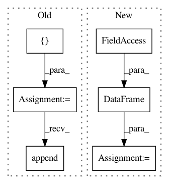

1c8608f922bd80188a6c708ea42789627e34bdb5,pgmpy/inference/Sampling.py,BayesianModelSampling,forward_sample,#BayesianModelSampling#,33
Before Change
[{"intel": "intel_0", "grade": "grade_1", "diff": "diff_1"},
{"intel": "intel_1", "grade": "grade_0", "diff": "diff_0"}]
sampled = []
for _ in range(size):
particle = {}
for node in self.topological_order:
cpd = self.cpds[node]
if cpd.evidence:
evid = []
for var in cpd.evidence:
evid.append(particle[var])
weights = cpd.reduce(evid, inplace=False).values
else:
weights = cpd.values
particle[node] = sample_discrete(cpd.variables[cpd.variable], weights)
sampled.append(particle)
return sampled
After Change
0 diff_1 intel_0 grade_1
1 diff_1 intel_0 grade_2
sampled = DataFrame(index=range(0, size),
columns=self.topological_order)
for i in range(size):
particle = {}
for node in self.topological_order:
cpd = self.cpds[node]
In pattern: SUPERPATTERN
Frequency: 3
Non-data size: 6
Instances
Project Name: pgmpy/pgmpy
Commit Name: 1c8608f922bd80188a6c708ea42789627e34bdb5
Time: 2015-06-02
Author: pratyaksh@me.com
File Name: pgmpy/inference/Sampling.py
Class Name: BayesianModelSampling
Method Name: forward_sample
Project Name: dirty-cat/dirty_cat
Commit Name: f819a34e2fbea2dab4997b3b236b517fa12d115d
Time: 2018-06-08
Author: gael.varoquaux@normalesup.org
File Name: examples/02_predict_employee_salaries.py
Class Name:
Method Name:
Project Name: dirty-cat/dirty_cat
Commit Name: f819a34e2fbea2dab4997b3b236b517fa12d115d
Time: 2018-06-08
Author: gael.varoquaux@normalesup.org
File Name: examples/03_midwest_survey.py
Class Name:
Method Name: